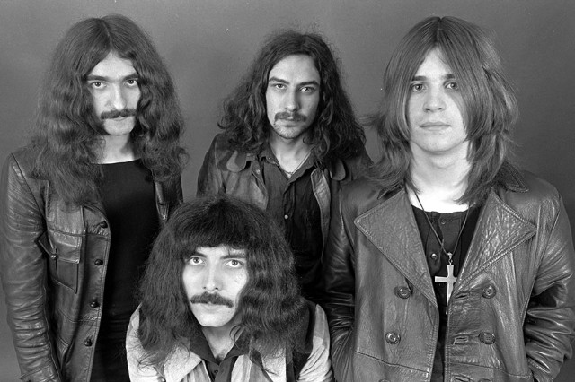

| Led Zeppelin | Queen | Black Sabbath | Aerosmith | About me |
Black Sabbath
Black Sabbath — британская рок-группа, образованная в Бирмингеме, Англия, в 1968 году и оказавшая заметное влияние на развитие рок-музыки, прежде всего, жанра хеви-метал. Дебютный альбом Black Sabbath считается одним из первых хеви-металических альбомов, заложившим, кроме того, фундамент и для последующего развития дум-метала. Десять альбомов группы входили в первую десятку UK Albums Chart. К 2000 году общий тираж альбомов Black Sabbath приблизился к 70 миллионам.
В 2011 году группа воссоединилась в первоначальном составе. В 2012 году музыканты выступили на нескольких музыкальных фестивалях, а в 2013 году записали новый альбом "13" и провели масштабное мировое турне.
3 сентября 2015 года группа объявила о старте прощального тура под названием THE END. 4 февраля 2017 года в родном городе группы был сыгран последний концерт, после чего группа распалась.

Первый и самый продолжительный состав группы.
Paranoid